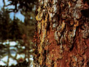

Here's the pitch: No more crumpling up a mountain of newspaper to fire up the woodstove, and no more wasting valuable Coleman fuel to coax a reluctant campfire into comforting flames.
All the experienced woodsmen I knew while I was growing up in Montana and Idaho started their campfires with pitch -a sticky, resinous substance found in and on conifer trees. Those old-timers knew that this naturally occurring incendiary is not only totally dependable, but also available anyplace evergreen trees are found.
Pitch is formed by the concentration of resins in a conifer's heartwood and roots, as well as on the bark, especially around scars and near the base of the trunk. Wood that's impregnated with pitch is interchangeably called lightwood or pitch wood.
In some cases, a tree will produce so much resin that the sappy substance actually exudes from the wood in the form of highly flammable, yellowish globs-known as pitch balls t hat cling to the bark. Pitch balls as big as a prizefighter's fists can sometimes be found near the bases of young pine trees, while in spruce and fir forests pitch balls rarely exceed the size of peas.
In fact, the pines produce more pitch than any other species of conifer, and of the pines, the most resinous variety is the eastern North American Pinus rigida, commonly called the pitch pine. But pitch is most common in the vast western evergreen forests.
Although pitch resins are most abundant in the pines, Douglas fir produces the richest (that is, the most flammable) pitch. But because it congeals only in the heartwood, fir pitch is more difficult to locate and harvest than pine pitch; about the only way to find Douglas fir pitch is to chop the heartwood out of rotted stumps or logs.
With pine, however, harvesting pitch can be as simple as breaking off chunks of bark near a tree's base. The dried resin will be visible on the bark as hardened, yellowish globs. But be careful to remove only small amounts of the outer bark from any one tree to avoid damaging the pine's health-and you might want to wear gloves to keep the sticky stuff off your hands.
One of the best and most accessible sources of large quantities of pitch wood is driftwood washed down from high mountain forests during the annual springtime flooding of western rivers. In many cases, huge jams of evergreen logs collect along the insides of a river's bends or get tangled in snag piles. Later in the year, when the floodwaters recede, these logjams are left high and dry, providing the knowledgeable camper or firewood gatherer with veritable mountains of pitch-rich wood.
For most applications, including kindling fires in woodstoves, pitch wood should be cut into blocks measuring 10" to 12" in length, then split into sticks about 1/2" thick, and finally shaved so that splinters project from the sides to form "fuzz sticks"-which will ignite at the first kiss of a match's flame. If the lightwood is rich, three of these fuzzy splinters will get things hot in a hurry.
An equivalent amount of pitch-covered pine bark will also do the trick. If you're using pitch in ball form (which is best collected by slicing it off the bark with a sharp knife), half a handful of the stuff, placed under a cone of dry wood, will produce a roaring fire in moments.
One way to be sure that you'll always have a supply of pitch available when you need it is to carry it with you on camping and packing trips. Once you locate a supply of lightwood-the richer the better-saw it into 3" to 4" lengths, then split each length into as many 1/8"-diameter splinters as it will produce. Bind a fistful of these highly combustible splinters together with a rubber band, then place the bundle of sticks, together with several strike-anywhere wooden matches, in a plastic bag and stash it in a pocket of your packsack. Six or eight of these ministicks positioned beneath a tipi-shaped arrangement of firewood (with kindling-sized twigs and sticks forming the inside of the tipi and larger sticks laid on top) will have things cooking in no time.
A PITCH FOR SAFETY
Because of its highly combustible nature, pitch can be extremely hazardous. For example, when I was living in northern Virginia, I once gathered a packsackful of pitch wood from several rotting white pine stumps and shared my treasure with a neighbor. I made a point of advising her to use the lightwood only sparingly, and explained why. Just an hour later, two fire engines pulled up in front of her house. I soon learned that my neighbor's unsuspecting daughter had found the pitch sticks stored near the fireplace, piled the entire supply on the grate, then lit what turned out to be a most impressive fire . . . the pitch wood burned with a frightening intensity and filled the living room with thick, black, acrid smoke.
So, please, use only enough pitch wood to kindle a fire, and not one bit more.
But used sensibly, pitch-the old-time woodsman's favorite fire starter-can safely provide the clout needed for kindling the wood fires that cook our food, warm our bodies and souls, and cheer our homes and campsites.
|
The author warms himself by a fire ignited with pitch in Montana's Bitterroot Mountains. |
Douglas fir pitch wood is the richest to be found in the northern Rocky Mountains |
 Pitch balls like these clinging to the bark of a spruce can be plucked by hand, but the fastest and cleanest method is tio slice them off with a sharp knife. |